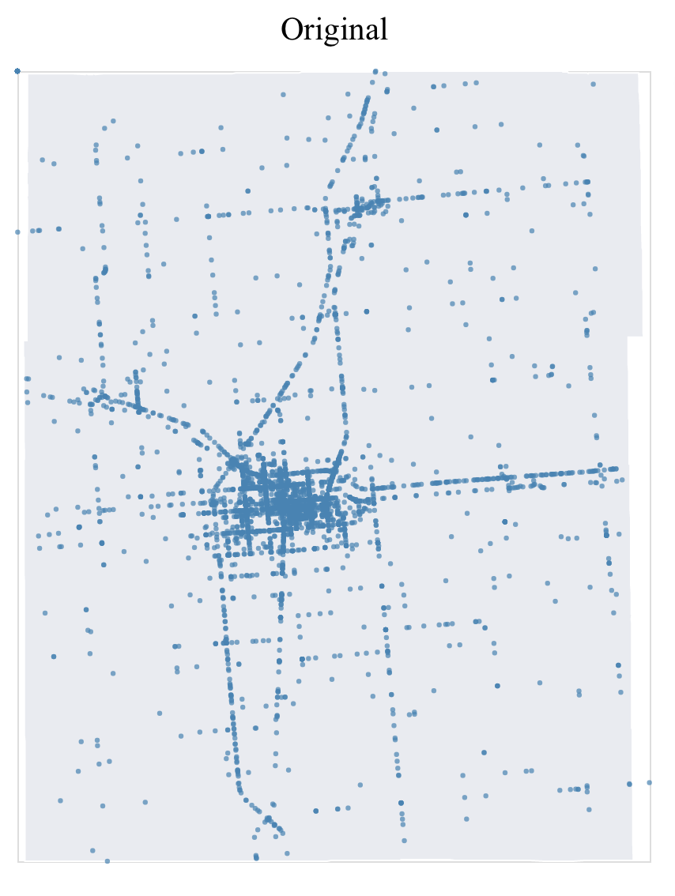

Background of map
In the first version of the dotted map, I used a county topojson as the background layer, hoping to make the map more meaningful. But the topojson file does not have more detailed city-level information so the bottom layer is more like a colored background instead of a map. So I replaced it with an us zipcode topojson and filtered out zipcodes in Champaign county only. Now the map have a more meaningful background. I also added tooltip for that layer, displaying zipcodes and city names. A benefit of this is that some records in the crash dataset does not have city recorded, after adding the bottom layer, users can refer to that layer for additional information.

Statistics of data
The dataset only contains 3 numeric columns(year, fatality and injury) and none of them is decimal which makes the dataset less suitable for continuous visualizations. I first tried injury vs. year but the dotted graph provides very limited information. After going over examples on the vega-lite website, I transformed it to a statistical scatterplot showing how max and average injury/fatality change every year. By doing so, I was able to see a decreasing trend in both injury and fatality as time goes by. Also the fatality plot highlights crashes with extreme values, an accident with 4 fatalities in 2001 for example.

Top-K ranking
In premade visualization section, there is a bar graph showing count of crashes by year and city. I received suggestions about implementing the Top-K ranking features. Unfortunately I was not able to get it working on this stacked bar graph. But I did looked into that feature and use it to add a new bar graph, showing top 10 cities of crashes.